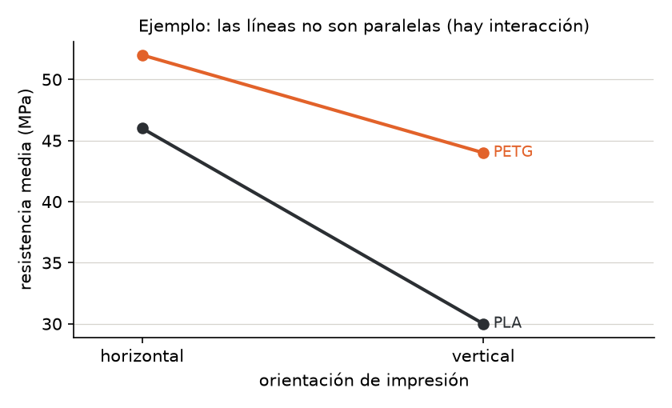
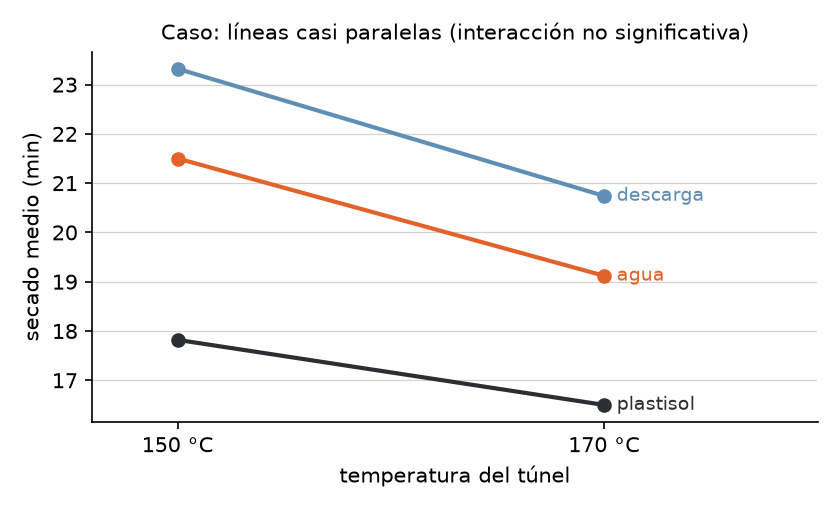
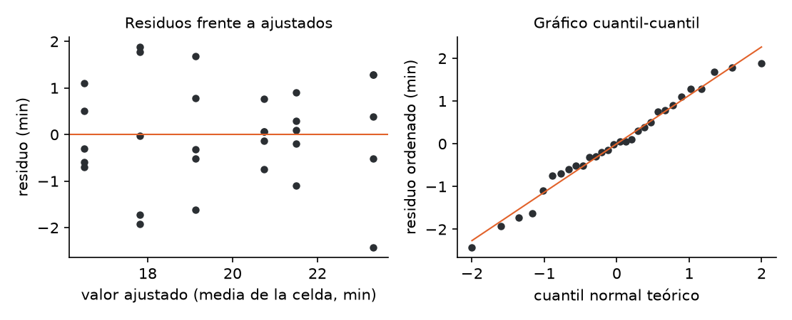

![Camilo Merino]()
Unidad 9 · ANOVA de varios factores, interacciones y supuestos
Qué vas a poder hacer. Plantear un diseño factorial de dos factores con réplicas, escribirlo como modelo lineal en forma matricial, descomponer la variabilidad en efectos principales, interacción y error, leer un gráfico de interacción, decidir qué tipo de suma de cuadrados informar cuando el diseño no está balanceado, revisar los supuestos con los residuos y elegir qué hacer cuando fallan.
Lo que necesitas antes. De la unidad 7, el ANOVA de un factor: sumas de cuadrados entre y dentro, cuadrados medios y la prueba \(F\). De la unidad 8, las comparaciones múltiples (Tukey) para decir qué niveles difieren después de una \(F\) significativa. De álgebra lineal, multiplicar matrices.
Tiempo. Unas 6 horas: 2,5 de lectura con el ejemplo y 3,5 de práctica con el cuaderno.
1. La idea · dos factores en el mismo experimento
En la unidad 7 se comparaban los niveles de un factor. Casi nunca hay uno solo: el tiempo de secado depende de la tinta y también de la temperatura; la resistencia de una pieza, del material y de cómo se fabricó. Hay dos caminos:
- Un experimento por factor. Se fija la temperatura y se prueban tintas; después se fija la tinta y se prueban temperaturas. Gasta el doble de unidades y no dice nada de cómo se combinan.
- Un diseño factorial. Se prueban todas las combinaciones de niveles (cada combinación es un tratamiento o celda) y se repite cada una \(n\) veces. Con los mismos datos se estiman los dos efectos y, además, si el efecto de uno depende del nivel del otro: la interacción.
Un diseño \(a \times b\) con \(n\) réplicas tiene \(ab\) celdas y \(N = abn\) observaciones. Es balanceado si todas las celdas tienen el mismo \(n\). Las réplicas tienen que ser réplicas verdaderas: unidades distintas tratadas por separado, no la misma pieza medida tres veces.
Por qué conviene aunque no haya interacción. Lo que explica el segundo factor sale del error. Con menos ruido en el denominador, la \(F\) del primer factor crece. El caso de esta unidad lo muestra: la misma tinta pasa de \(F = 23{,}46\) (un factor) a \(F = 41{,}78\) (dos factores).
2. El modelo de dos factores
Notación. Factor A con niveles \(i = 1, \dots, a\); factor B con niveles \(j = 1, \dots, b\); réplica \(k = 1, \dots, n\). \(Y_{ijk}\) es la \(k\)-ésima respuesta de la celda \((i, j)\).
Modelo de medias de celda. Cada celda tiene su media y las observaciones varían alrededor de ella:
\[Y_{ijk} = \mu_{ij} + \varepsilon_{ijk}, \qquad \varepsilon_{ijk} \sim N(0, \sigma^2) \text{ independientes}\]
Modelo de efectos. La misma media de celda, separada en piezas que se pueden interpretar:
\[Y_{ijk} = \mu + \alpha_i + \beta_j + (\alpha\beta)_{ij} + \varepsilon_{ijk}\]
con las restricciones \(\sum_i \alpha_i = 0\), \(\sum_j \beta_j = 0\), \(\sum_i (\alpha\beta)_{ij} = \sum_j (\alpha\beta)_{ij} = 0\).
| Pieza | Qué es | Se estima con |
|---|---|---|
| \(\mu\) | media global | \(\bar y_{\cdot\cdot\cdot}\) |
| \(\alpha_i\) | cuánto se aparta el nivel \(i\) de A del promedio | \(\bar y_{i\cdot\cdot} - \bar y_{\cdot\cdot\cdot}\) |
| \(\beta_j\) | cuánto se aparta el nivel \(j\) de B | \(\bar y_{\cdot j\cdot} - \bar y_{\cdot\cdot\cdot}\) |
| \((\alpha\beta)_{ij}\) | lo que la celda tiene de más respecto de lo que predicen A y B por separado | \(\bar y_{ij\cdot} - \bar y_{i\cdot\cdot} - \bar y_{\cdot j\cdot} + \bar y_{\cdot\cdot\cdot}\) |
Las restricciones no son un capricho: sin ellas hay más parámetros que medias de celda (\(1 + a + b + ab\) contra \(ab\)) y el modelo no tiene una solución única.
Las tres hipótesis.
| Efecto | \(H_0\) | \(H_1\) |
|---|---|---|
| Interacción A×B | \((\alpha\beta)_{ij} = 0\) para todo \(i, j\) | alguna \((\alpha\beta)_{ij} \ne 0\) |
| Principal de A | \(\alpha_1 = \dots = \alpha_a = 0\) | algún \(\alpha_i \ne 0\) |
| Principal de B | \(\beta_1 = \dots = \beta_b = 0\) | algún \(\beta_j \ne 0\) |
Fijos o aleatorios. Si los niveles se eligieron a propósito (estas tres tintas, estas dos temperaturas), los efectos son fijos y la conclusión vale para esos niveles. Si los niveles son una muestra de una población más grande (cuatro operarios sacados al azar de cuarenta), el efecto es aleatorio: interesa su varianza, no la media de cada nivel. Esta unidad trabaja con efectos fijos.
3. La forma matricial \(Y = X\beta + \varepsilon\)
El ANOVA es un modelo lineal: el mismo \(Y = X\beta + \varepsilon\) de la regresión (unidad 10), con columnas de \(X\) que son variables indicadoras (0 o 1) en vez de mediciones.
Con la codificación de referencia se elige un nivel base de cada factor. En un \(2 \times 2\) con A en niveles 1 y 2 y B en niveles 1 y 2, las columnas son: la constante, «es nivel 2 de A», «es nivel 2 de B» y su producto. Cada celda tiene una fila distinta:
| Celda | constante | \(x_A\) | \(x_B\) | \(x_A x_B\) | media que modela |
|---|---|---|---|---|---|
| (1, 1) | 1 | 0 | 0 | 0 | \(\beta_0\) |
| (2, 1) | 1 | 1 | 0 | 0 | \(\beta_0 + \beta_1\) |
| (1, 2) | 1 | 0 | 1 | 0 | \(\beta_0 + \beta_2\) |
| (2, 2) | 1 | 1 | 1 | 1 | \(\beta_0 + \beta_1 + \beta_2 + \beta_3\) |
La matriz \(X\) completa repite cada fila \(n\) veces. Los mínimos cuadrados dan
\[\hat\beta = (X^\top X)^{-1} X^\top Y\]
y la lectura es directa: \(\hat\beta_0\) es la media de la celda base, \(\hat\beta_1\) la diferencia entre los niveles de A dentro del nivel base de B, \(\hat\beta_2\) lo mismo para B, y \(\hat\beta_3\) la diferencia de diferencias: cuánto cambia el efecto de B al pasar al nivel 2 de A. Si \(\beta_3 = 0\), no hay interacción.
Por qué importa. La forma matricial es la que usa el software (statsmodels arma \(X\) cuando
escribes C(A) * C(B)), y es la que permite tratar el desbalance, agregar una variable continua o
pasar a la regresión sin cambiar de herramienta. Una advertencia: statsmodels elige como base el
primer nivel en orden alfabético, así que sus coeficientes pueden diferir de los tuyos aunque el ajuste
sea idéntico.
4. La tabla ANOVA de dos factores (caso balanceado)
La desviación de cada dato respecto de la media global se parte en cuatro trozos, y sus cuadrados suman (los productos cruzados se anulan cuando el diseño es balanceado):
\[SC_T = SC_A + SC_B + SC_{AB} + SC_E\]
\[SC_A = bn\sum_i (\bar y_{i\cdot\cdot} - \bar y_{\cdot\cdot\cdot})^2 \qquad SC_B = an\sum_j (\bar y_{\cdot j\cdot} - \bar y_{\cdot\cdot\cdot})^2\]
\[SC_{AB} = n\sum_{i,j} (\bar y_{ij\cdot} - \bar y_{i\cdot\cdot} - \bar y_{\cdot j\cdot} + \bar y_{\cdot\cdot\cdot})^2 \qquad SC_E = \sum_{i,j,k} (y_{ijk} - \bar y_{ij\cdot})^2\]
| Fuente | gl | SC | CM | \(F\) |
|---|---|---|---|---|
| A | \(a-1\) | \(SC_A\) | \(SC_A/(a-1)\) | \(CM_A/CM_E\) |
| B | \(b-1\) | \(SC_B\) | \(SC_B/(b-1)\) | \(CM_B/CM_E\) |
| A×B | \((a-1)(b-1)\) | \(SC_{AB}\) | \(SC_{AB}/[(a-1)(b-1)]\) | \(CM_{AB}/CM_E\) |
| Error | \(ab(n-1)\) | \(SC_E\) | \(CM_E\) | |
| Total | \(abn-1\) | \(SC_T\) |
La intuición. \(CM_E\) mide el ruido dentro de las celdas, donde todo está fijo salvo el azar. Cada \(CM\) de un efecto mide cuánto se separan las medias por ese efecto, más el mismo ruido. Si el efecto no existe, los dos estiman \(\sigma^2\) y la \(F\) ronda 1; bajo \(H_0\) sigue una \(F\) con los gl de la fila y los del error.
Sin réplicas no hay prueba de interacción. Con \(n = 1\), \(SC_E\) tiene \(ab(1-1) = 0\) grados de libertad: todo lo que no explican A y B es a la vez interacción y error, y no se pueden separar. Solo queda suponer que no hay interacción y usar \(SC_{AB}\) como error.
Tamaño del efecto. Una \(F\) enorme dice que el efecto existe, no que importe. El \(\eta^2\) parcial dice qué fracción de la variabilidad que queda explica cada efecto:
\[\eta^2_p = \frac{SC_\text{efecto}}{SC_\text{efecto} + SC_E}\]
5. La interacción y el gráfico de interacción
Hay interacción cuando el efecto de un factor depende del nivel del otro. No significa que los factores estén correlacionados ni que «se refuercen»: significa que no se puede hablar del efecto de A sin decir en qué nivel de B.
El gráfico de interacción pone un factor en el eje horizontal, la media de cada celda en el vertical, y une con una línea las celdas de cada nivel del otro factor.
| Lo que se ve | Lectura |
|---|---|
| Líneas paralelas | sin interacción: el efecto de B es el mismo en todos los niveles de A |
| Líneas que se abren o se cierran | interacción cuantitativa: B actúa en la misma dirección, con distinta fuerza |
| Líneas que se cruzan | interacción cualitativa: el mejor nivel de B cambia según A |
El gráfico se mira antes de la tabla, pero no reemplaza la prueba: con pocas réplicas, dos líneas pueden verse algo inclinadas solo por azar. La \(F\) de la interacción dice si la falta de paralelismo es más grande que el ruido.
El orden de lectura.
- Primero la interacción. Si no es significativa, se leen los efectos principales con las medias marginales, y las comparaciones múltiples de la unidad 8 se hacen sobre esas medias con el \(CM_E\) del modelo de dos factores.
- Si es significativa, los efectos principales pierden sentido por sí solos. Un efecto principal «no significativo» puede esconder dos efectos opuestos que se cancelan. Se analizan los efectos simples: el efecto de B dentro de cada nivel de A, con
\[t = \frac{\bar y_{i1\cdot} - \bar y_{i2\cdot}}{\sqrt{CM_E \cdot 2/n}} \qquad \text{gl} = ab(n-1)\]
y con una corrección por comparaciones múltiples (Bonferroni: \(\alpha\) dividido por el número de comparaciones) si son varias.
6. Sumas de cuadrados tipo I, II y III
Si el diseño está balanceado, los factores son ortogonales: lo que explica A no se superpone con lo que explica B, y cualquier forma de calcular las sumas de cuadrados da lo mismo. Si está desbalanceado (una probeta se rompió, un estudio observacional), A y B quedan correlacionados y hay que decidir a quién se le atribuye la parte compartida.
| Tipo | Qué mide cada fila | Cuándo se usa |
|---|---|---|
| I (secuencial) | lo que agrega cada término en el orden en que se escribe: \(SC(A)\), luego \(SC(B \mid A)\), luego \(SC(AB \mid A, B)\) | cuando hay un orden natural (un factor que se controla primero); cambia si cambias el orden |
| II | cada efecto principal ajustado por el otro: \(SC(A \mid B)\), \(SC(B \mid A)\); la interacción ajustada por ambos | la opción por defecto cuando la interacción no es significativa |
| III | cada efecto ajustado por todos los demás, incluida la interacción | cuando hay interacción y se quiere probar efectos principales igual; exige codificación de suma cero |
Cada \(SC(\cdot \mid \cdot)\) es una diferencia de sumas de cuadrados del error entre dos modelos anidados: \(SC(B \mid A) = SC_E(\text{solo } A) - SC_E(A + B)\). Lo que «explica» B es lo que baja el error al agregarlo.
mod = smf.ols("y ~ C(A) * C(B)", data=df).fit()
sm.stats.anova_lm(mod, typ=1) # secuencial: depende del orden de la fórmula
sm.stats.anova_lm(mod, typ=2) # ajustada; no depende del orden
7. Supuestos y qué hacer si fallan
Los supuestos son del error, y se revisan con los residuos \(e_{ijk} = y_{ijk} - \bar y_{ij\cdot}\), no con los datos crudos.
| Supuesto | Cómo se revisa | Si falla |
|---|---|---|
| Independencia | se asegura con el diseño: unidades distintas, orden de corrida al azar | no hay corrección estadística; hay que rehacer el diseño o modelar la dependencia |
| Normalidad | gráfico cuantil-cuantil de los residuos; Shapiro-Wilk (unidad 5) | la \(F\) es robusta con celdas balanceadas y \(n\) moderado; si el problema es un dato aberrante, primero revisarlo |
| Varianzas iguales | residuos frente a ajustados (que no hagan embudo); Levene sobre las \(ab\) celdas; razón entre la varianza mayor y la menor | transformar la respuesta; Welch (un factor); errores robustos |
Antes de transformar, mirar el dato. Un residuo estandarizado (\(e / \sqrt{CM_E}\)) mayor que 3 en valor absoluto suele ser un error de digitación o una unidad rara. Si se confirma el error, se corrige; si no, se informa con y sin ese dato.
Transformaciones. Si la desviación estándar crece con la media (tiempos, montos, concentraciones), el logaritmo estabiliza la varianza y convierte efectos multiplicativos en aditivos. Para conteos, la raíz cuadrada. Box-Cox elige la potencia con los datos. Después de un logaritmo, una diferencia de medias \(d\) en la escala log se lee como una razón \(e^{d}\) en la escala original. Ojo: una interacción puede desaparecer con la transformación (era solo efecto de la escala) y eso es una buena noticia, porque el modelo aditivo es más simple de explicar.
Welch. Para un factor con varianzas distintas, la \(F\) de Welch pondera cada grupo por \(w_i = n_i / s_i^2\) (los grupos ruidosos pesan menos):
\[F_W = \frac{\sum w_i (\bar y_i - \bar y_w)^2 / (k-1)}{1 + \frac{2(k-2)}{k^2-1}\Lambda} \qquad \bar y_w = \frac{\sum w_i \bar y_i}{\sum w_i} \qquad \Lambda = \sum \frac{(1 - w_i/\sum w)^2}{n_i - 1}\]
con \(k-1\) y \((k^2-1)/(3\Lambda)\) grados de libertad. En statsmodels:
anova_oneway(grupos, use_var="unequal"). Para dos factores, la versión equivalente es pedir errores
robustos a la heterocedasticidad: sm.stats.anova_lm(mod, typ=2, robust="hc3").
Kruskal-Wallis (mención). Reemplaza los datos por sus rangos y compara un factor sin suponer
normalidad (stats.kruskal). No tiene una versión directa para la interacción, y responde algo
distinto: si alguna distribución tiende a dar valores más altos, no si las medias difieren.
8. Ejemplo resuelto · probetas impresas en 3D
Un taller de impresión 3D de Temuco fabrica soportes para repisas y quiere saber cuánto influyen el material (PLA o PETG) y la orientación de impresión (capas horizontales o verticales respecto de la carga) en la resistencia a la tracción (MPa). Imprime tres probetas por combinación, en orden al azar, y las ensaya.
| Material | Orientación | \(y_1\) | \(y_2\) | \(y_3\) | Media |
|---|---|---|---|---|---|
| PLA | horizontal | 44 | 48 | 46 | 46 |
| PLA | vertical | 31 | 28 | 31 | 30 |
| PETG | horizontal | 51 | 54 | 51 | 52 |
| PETG | vertical | 45 | 44 | 43 | 44 |
Paso 1 · Medias. Marginales: PLA 38, PETG 48; horizontal 49, vertical 37. Global: 43.
Paso 2 · Sumas de cuadrados (\(a = b = 2\), \(n = 3\)).
\[SC_A = 2 \cdot 3\,[(38-43)^2 + (48-43)^2] = 300 \qquad SC_B = 2 \cdot 3\,[(49-43)^2 + (37-43)^2] = 432\]
Efecto de interacción de cada celda: PLA-horizontal \(46 - 38 - 49 + 43 = 2\), y por las restricciones las otras tres valen \(-2\), \(-2\) y \(2\). Entonces \(SC_{AB} = 3 \cdot 4 \cdot 2^2 = 48\). El error suma los cuadrados de los desvíos dentro de cada celda: \((4+4+0) + (1+4+1) + (1+4+1) + (1+0+1) = 22\). Total: \(300 + 432 + 48 + 22 = 802\).
Paso 3 · Tabla y pruebas (cada gl del efecto es 1; el error tiene \(4 \cdot 2 = 8\)).
| Fuente | gl | SC | CM | \(F\) | valor p | \(\eta^2_p\) |
|---|---|---|---|---|---|---|
| Material | 1 | 300 | 300 | 109,09 | p < 0,001 | 0,93 |
| Orientación | 1 | 432 | 432 | 157,09 | p < 0,001 | 0,95 |
| Interacción | 1 | 48 | 48 | 17,45 | p = 0,003 | 0,69 |
| Error | 8 | 22 | 2,75 | |||
| Total | 11 | 802 |
Las tres pruebas en cinco pasos se resumen así (con \(F_{0,95;\,1,\,8} = 5{,}32\)):
- Pregunta. ¿El efecto de la orientación depende del material? ¿Influyen el material y la orientación?
- Hipótesis. \(H_0: (\alpha\beta)_{ij} = 0\); \(H_0: \alpha_i = 0\); \(H_0: \beta_j = 0\), contra que alguno no es cero.
- Estadístico. \(F = CM_\text{efecto}/CM_E\), que bajo \(H_0\) sigue una \(F(1, 8)\).
- Valor p. Los tres están bajo 0,05 (las tres \(F\) superan 5,32).
- Conclusión. La orientación debilita la pieza, pero cuánto depende del material.
Paso 4 · El gráfico de interacción.

Las líneas no se cruzan pero no son paralelas: imprimir vertical cuesta 16 MPa en PLA y solo 8 en PETG. Como la interacción es significativa, el siguiente paso son los efectos simples de la orientación en cada material, con el \(CM_E\) del modelo:
\[\sqrt{CM_E \cdot 2/n} = \sqrt{2{,}75 \cdot 2/3} = 1{,}354 \qquad t_\text{PLA} = \frac{46-30}{1{,}354} = 11{,}82 \qquad t_\text{PETG} = \frac{52-44}{1{,}354} = 5{,}91\]
Los dos superan \(t_{0,975;\,8} = 2{,}306\): la orientación importa en ambos materiales.
Paso 5 · La forma matricial. Base: PLA y horizontal. Las cuatro filas distintas de \(X\) son \((1,0,0,0)\), \((1,0,1,0)\), \((1,1,0,0)\) y \((1,1,1,1)\), cada una tres veces.
\[X^\top X = \begin{pmatrix} 12 & 6 & 6 & 3 \\ 6 & 6 & 3 & 3 \\ 6 & 3 & 6 & 3 \\ 3 & 3 & 3 & 3 \end{pmatrix} \qquad X^\top Y = \begin{pmatrix} 516 \\ 288 \\ 222 \\ 132 \end{pmatrix} \qquad \hat\beta = (X^\top X)^{-1}X^\top Y = \begin{pmatrix} 46 \\ 6 \\ -16 \\ 8 \end{pmatrix}\]
\(\hat\beta_0 = 46\) es la media de PLA horizontal; \(\hat\beta_1 = 6\), lo que gana el PETG en horizontal; \(\hat\beta_2 = -16\), lo que pierde el PLA al imprimir vertical; \(\hat\beta_3 = 8\), cuánto menos pierde el PETG que el PLA al pasar a vertical (\(-8\) contra \(-16\)). Es la interacción con nombre y apellido.
Paso 6 · Supuestos. Levene sobre las cuatro celdas da p = 0,95 y Shapiro-Wilk de los residuos, p = 0,26: nada contradice varianzas iguales ni normalidad (con solo 12 datos, ninguna prueba tiene mucha potencia; el gráfico de residuos del cuaderno no muestra embudo). Como el diseño es balanceado, las sumas de cuadrados tipo I y tipo II coinciden.
ej = pd.read_csv("../datos/u09_ejemplo.csv")
mod = smf.ols("resistencia ~ C(material) * C(orientacion)", data=ej).fit()
print(sm.stats.anova_lm(mod, typ=2)) # la tabla del paso 3
print(stats.levene(*[g.resistencia for _, g in ej.groupby(["material", "orientacion"])]))
print(stats.shapiro(mod.resid))
Cómo se lee. El taller no puede decir «el PETG es 10 MPa mejor» a secas, porque la ventaja depende de la orientación: en horizontal es de 6 MPa y en vertical, de 14. La decisión práctica: si una pieza tiene que imprimirse vertical (por su forma), el PETG es casi obligatorio; si se puede imprimir horizontal, el PLA rinde 46 MPa y puede bastar, porque es más barato. Lo que manda es la combinación, no cada factor por separado.
9. Errores típicos
| Error | Cómo evitarlo |
|---|---|
| Hacer dos ANOVA de un factor en vez de uno de dos factores | Un solo modelo: separa los efectos, prueba la interacción y achica el error |
| Leer los efectos principales sin mirar antes la interacción | Primero la fila A×B; si es significativa, efectos simples dentro de cada nivel |
| Decir «no hay interacción» porque \(p > 0{,}05\) | «No se rechaza» no es «se acepta»: con pocas réplicas la prueba tiene poca potencia; mira también el gráfico y el \(\eta^2_p\) |
| Confundir significativo con importante | Informa la diferencia en unidades del problema (MPa, minutos) y el \(\eta^2_p\), no solo el valor p |
| Probar la interacción con \(n = 1\) | Sin réplicas el error tiene 0 gl; hay que suponer aditividad |
| Revisar la normalidad de los datos crudos | Se revisan los residuos: los datos crudos mezclan medias distintas |
| Hacer Levene sobre un factor cuando el modelo tiene dos | La varianza tiene que ser igual en las \(ab\) celdas |
| Mirar el valor p y no los supuestos | Un dato mal digitado puede borrar un efecto real (ejercicio 9.6) |
| Informar sumas tipo I en un diseño desbalanceado sin decir el orden | En desbalance usa tipo II (o III si hay interacción) y dilo |
Interpretar los coeficientes de statsmodels con otra base |
Revisa qué nivel quedó de referencia (el primero en orden alfabético) |
10. Práctica
Diez ejercicios: 9.1 a 9.4 básicos, 9.5 a 9.8 intermedios, 9.9 y 9.10 de desafío. Usa \(\alpha = 0{,}05\) salvo que se indique otra cosa. Las pautas están en la sección 11.
9.1 · Completar la tabla (básico). Una lavandería industrial de Chillán mide el consumo de agua por carga con 3 programas de lavado y 2 tipos de carga (algodón, sintético), 4 cargas por combinación. Obtuvo \(SC_\text{programa} = 58{,}6\), \(SC_\text{carga} = 21{,}3\), \(SC_{AB} = 4{,}2\) y \(SC_T = 131{,}5\). Completa la tabla ANOVA (gl, CM, \(F\), valor p), da los valores críticos y concluye en el lenguaje del problema.
9.2 · Leer las medias de celda (básico). Un call center mide el tiempo medio de atención (min) por canal y turno:
| Canal | mañana | tarde | noche |
|---|---|---|---|
| teléfono | 6,2 | 6,8 | 7,9 |
| chat | 8,1 | 8,7 | 11,0 |
(a) Calcula las medias marginales, la global y los seis efectos de interacción \((\alpha\beta)_{ij}\). (b) Describe el gráfico de interacción. (c) ¿Puedes decir con esta tabla si la interacción es significativa?
9.3 · La matriz de diseño (básico). Un taller de bicicletas mide los minutos que tarda en cambiar una cadena según el técnico y el tipo de bicicleta, dos veces por combinación:
| Técnico | Bicicleta | 1.º | 2.º |
|---|---|---|---|
| Ana | ruta | 12 | 14 |
| Ana | montaña | 17 | 19 |
| Benjamín | ruta | 15 | 15 |
| Benjamín | montaña | 24 | 22 |
Con Ana y ruta como base, escribe la matriz \(X\) (\(8 \times 4\)), calcula \(X^\top X\) y obtén \(\hat\beta\) sin invertir matrices, usando lo que significa cada coeficiente. Comprueba con Python. ¿Qué dice \(\hat\beta_3\)? ¿Es significativa la interacción?
9.4 · Grados de libertad (básico). Una viña del Maule compara el rendimiento de 4 clones con 3 tipos de poda, 3 hileras por combinación. (a) Da los gl de cada fila y los valores críticos \(F_{0,95}\) de las tres pruebas. (b) Si tuviera una sola hilera por combinación, ¿qué pasaría con la prueba de interacción? ¿Con qué error y qué valores críticos probaría los efectos principales?
9.5 · Una tabla completa a mano (intermedio). Una panadería mide los minutos de fermentación de la masa con dos levaduras y tres temperaturas de sala:
| Levadura | Sala | \(y_1\) | \(y_2\) | \(y_3\) |
|---|---|---|---|---|
| fresca | 22 °C | 92 | 88 | 95 |
| fresca | 26 °C | 74 | 78 | 73 |
| fresca | 30 °C | 61 | 66 | 62 |
| seca | 22 °C | 101 | 97 | 99 |
| seca | 26 °C | 84 | 80 | 85 |
| seca | 30 °C | 70 | 72 | 67 |
Arma la tabla ANOVA a mano, calcula el \(\eta^2_p\) de cada efecto principal y, si corresponde, compara las temperaturas con Tukey usando el \(CM_E\) del modelo de dos factores.
9.6 · Un dato que esconde el efecto (intermedio). Una empacadora de arándanos llena cajas de 125 g con dos máquinas en dos turnos y pesa 5 cajas por combinación (g):
| Máquina | Turno | \(y_1\) | \(y_2\) | \(y_3\) | \(y_4\) | \(y_5\) |
|---|---|---|---|---|---|---|
| M1 | día | 125,8 | 126,1 | 125,5 | 126,4 | 125,9 |
| M1 | noche | 126,2 | 125,7 | 126,6 | 126,0 | 152,4 |
| M2 | día | 127,1 | 126,8 | 127,5 | 126,9 | 127,3 |
| M2 | noche | 127,0 | 127,6 | 126,7 | 127,4 | 127,2 |
(a) Haz el ANOVA y revisa los supuestos con los residuos. (b) El supervisor confirma que el 152,4 fue mal digitado: era 125,4. Rehaz el análisis. ¿Qué cambió y qué enseña?
9.7 · Una interacción que es solo escala (intermedio). El tiempo de respuesta (ms) de una API se mide con dos servidores y dos tamaños de consulta, 4 veces por combinación:
| Servidor | Consulta | \(y_1\) | \(y_2\) | \(y_3\) | \(y_4\) |
|---|---|---|---|---|---|
| estándar | chica | 38 | 44 | 41 | 36 |
| estándar | grande | 131 | 108 | 124 | 115 |
| optimizado | chica | 21 | 18 | 22 | 19 |
| optimizado | grande | 57 | 66 | 54 | 63 |
(a) Haz el ANOVA en la escala original y revisa las varianzas de las celdas. (b) Repite con \(\ln(\text{ms})\). (c) ¿Qué dice el modelo en la escala log sobre el servidor optimizado?
9.8 · Efectos simples (intermedio). Un ensayo de trigo cruza fertilizante (sin, con) y manejo (secano, riego), 4 parcelas por combinación. Medias (qq/ha): secano sin 38,2, secano con 41,0, riego sin 52,4 y riego con 63,8. El modelo completo dio \(CM_E = 6{,}8\) con 12 gl. (a) Prueba la interacción con el contraste \(c = (\bar y_{rc} - \bar y_{rs}) - (\bar y_{sc} - \bar y_{ss})\), cuya varianza es \(CM_E \cdot 4/n\). (b) Calcula el efecto del fertilizante en secano y en riego, con su \(t\) y su intervalo del 95 %. (c) ¿Cambia alguna conclusión con Bonferroni?
9.9 · Desbalance y tipos de suma de cuadrados (desafío). Una tienda en línea revisa el monto de sus pedidos (miles de $) según tipo de envío y región. Es un estudio observacional y las celdas quedaron desbalanceadas:
| Envío | Región | Montos |
|---|---|---|
| normal | Santiago | 12, 14, 13, 15, 11, 13 |
| normal | regiones | 9, 10 |
| express | Santiago | 16, 18 |
| express | regiones | 13, 12, 14, 15, 13, 12 |
(a) Compara la diferencia de medias express menos normal calculada con todos los pedidos y con el promedio de las medias de celda. (b) Calcula las sumas de cuadrados tipo I con los dos órdenes posibles y las tipo II. (c) ¿Cuál informarías y por qué?
9.10 · Varianzas desiguales (desafío). Tres transportistas entregan pedidos; los días de entrega fueron:
| Transportista | Días |
|---|---|
| A | 2,14 · 2,38 · 2,21 · 2,02 · 2,33 · 2,19 |
| B | 3,46 · 1,83 · 4,87 · 2,25 · 5,61 · 1,42 · 3,94 · 2,68 |
| C | 2,81 · 2,93 · 3,07 · 2,74 · 3,02 |
(a) Revisa la igualdad de varianzas. (b) Compara las medias con el ANOVA clásico y con Welch. (c) Aplica Kruskal-Wallis. (d) Explica por qué los tres resultados no coinciden y qué transportista contratarías.
11. Pautas
9.1. Error: \(SC_E = 131{,}5 - 58{,}6 - 21{,}3 - 4{,}2 = 47{,}4\) con \(3 \cdot 2 \cdot 3 = 18\) gl.
| Fuente | gl | SC | CM | \(F\) | valor p | \(F_{0,95}\) |
|---|---|---|---|---|---|---|
| Programa | 2 | 58,6 | 29,30 | 11,13 | p < 0,001 | 3,55 |
| Carga | 1 | 21,3 | 21,30 | 8,09 | p = 0,011 | 4,41 |
| Interacción | 2 | 4,2 | 2,10 | 0,80 | p = 0,466 | 3,55 |
| Error | 18 | 47,4 | 2,633 | |||
| Total | 23 | 131,5 |
La interacción no es significativa: no hay evidencia de que la diferencia entre algodón y sintético cambie con el programa. Entonces se leen los efectos principales: el programa y el tipo de carga influyen en el consumo de agua. El paso siguiente es Tukey sobre los tres programas para saber cuál gasta menos.
9.2. (a) Marginales: teléfono 6,97, chat 9,27; mañana 7,15, tarde 7,75, noche 9,45; global 8,12. Efectos de interacción:
| Canal | mañana | tarde | noche |
|---|---|---|---|
| teléfono | 0,20 | 0,20 | -0,40 |
| chat | -0,20 | -0,20 | 0,40 |
(b) La diferencia chat menos teléfono es 1,9 min en la mañana y en la tarde, y 3,1 de noche: dos líneas paralelas en los primeros turnos que se abren en la noche. Si hay interacción, está en el chat nocturno. (c) No. Para probarla hacen falta las réplicas: sin \(n\) ni \(CM_E\) no hay con qué comparar el 0,40. Una tabla de medias muestra la forma; la prueba dice si es más que ruido.
9.3. \(X\) tiene las filas \((1,0,0,0)\) dos veces (Ana, ruta), \((1,0,1,0)\) dos veces (Ana, montaña), \((1,1,0,0)\) dos veces (Benjamín, ruta) y \((1,1,1,1)\) dos veces (Benjamín, montaña).
\[X^\top X = \begin{pmatrix} 8 & 4 & 4 & 2 \\ 4 & 4 & 2 & 2 \\ 4 & 2 & 4 & 2 \\ 2 & 2 & 2 & 2 \end{pmatrix}\]
Medias de celda: 13, 18, 15 y 23. Entonces \(\hat\beta_0 = 13\) (Ana en ruta), \(\hat\beta_1 = 15 - 13 = 2\)
(Benjamín en ruta), \(\hat\beta_2 = 18 - 13 = 5\) (montaña, para Ana) y
\(\hat\beta_3 = (23 - 15) - (18 - 13) = 3\): a Benjamín la montaña le cuesta 3 minutos más que a Ana. La
interacción da \(F = 3{,}00\) con 1 y 4 gl, p = 0,158: con dos réplicas por celda no alcanza para
afirmarla. np.linalg.solve(X.T @ X, X.T @ y) devuelve los mismos cuatro números.
9.4. (a) A: 3 gl; B: 2; A×B: 6; error: \(4 \cdot 3 \cdot 2 = 24\); total: 35. Críticos: \(F_{0,95;\,3,\,24} = 3{,}01\), \(F_{0,95;\,2,\,24} = 3{,}40\) y \(F_{0,95;\,6,\,24} = 2{,}51\). (b) Con una hilera, el error del modelo con interacción tiene \(4 \cdot 3 \cdot 0 = 0\) gl: la interacción no se puede probar. Hay que suponer que no existe y usar su suma de cuadrados como error, con \(3 \cdot 2 = 6\) gl. Los críticos pasan a \(F_{0,95;\,3,\,6} = 4{,}76\) y \(F_{0,95;\,2,\,6} = 5{,}14\). Si la poda sí interactúa con el clon, ese error queda inflado y las pruebas pierden potencia.
9.5. Medias de celda: fresca 91,67, 75,00 y 63,00; seca 99,00, 83,00 y 69,67. Marginales: fresca 76,56, seca 83,89; 22 °C 95,33, 26 °C 79,00, 30 °C 66,33.
| Fuente | gl | SC | CM | \(F\) | valor p |
|---|---|---|---|---|---|
| Levadura | 1 | 242,00 | 242,00 | 33,25 | p < 0,001 |
| Temperatura | 2 | 2.536,44 | 1.268,22 | 174,26 | p < 0,001 |
| Interacción | 2 | 1,33 | 0,67 | 0,09 | p = 0,913 |
| Error | 12 | 87,33 | 7,28 | ||
| Total | 17 | 2.867,11 |
Sin interacción (las líneas son casi paralelas), los efectos principales se leen solos. \(\eta^2_p\): levadura 0,73, temperatura 0,97. Tukey sobre las temperaturas, con 6 datos por nivel: \(HSD = q_{0,95;\,3,\,12}\sqrt{CM_E/6} = 3{,}773\sqrt{7{,}28/6} = 4{,}16\) min. Las diferencias (16,33 entre 22 y 26 °C; 12,67 entre 26 y 30 °C; 29,00 entre 22 y 30 °C) superan todas 4,16. Cada grado de sala acorta la fermentación, y la levadura fresca ahorra unos 7 minutos en cualquier temperatura.
9.6. (a) Con el 152,4, la celda M1-noche tiene media 131,38 y el \(CM_E\) sube a 34,62. Ningún efecto es significativo (la \(F\) del turno es 1,09). Pero los residuos delatan el problema: Shapiro-Wilk da p < 0,001 y el residuo estandarizado de ese dato es 3,6. (b) Con 125,4: \(CM_E = 0{,}132\), la máquina da \(F = 53{,}5\) (p < 0,001), el turno 0,09 y la interacción nada. Shapiro p = 0,94; Levene p = 0,81. M2 llena en promedio 127,15 g contra 125,96 de M1: regala más fruta por caja. La lección: un solo dato mal digitado multiplicó el error por más de 260 y borró un efecto real. Mirar el valor p sin mirar los residuos habría llevado a decir que las máquinas llenan igual.
9.7. (a) Medias: 39,75, 119,50, 20,00 y 60,00. Varianzas de celda: 12,2, 101,7, 3,3 y 30,0; la mayor es 30,5 veces la menor (Levene p = 0,011). La interacción sale enorme: \(F = 42{,}92\), p < 0,001. (b) Con el logaritmo, la razón de varianzas baja a 1,2 (Levene p = 0,977) y la interacción desaparece: \(F = 0{,}00\), p = 0,980. (c) En la escala original, «el servidor optimizado ahorra 20 ms en consultas chicas y 60 en grandes» parecía una interacción; en realidad ahorra la misma proporción en las dos: la razón de medias geométricas es \(e^{d} = 0{,}50\), es decir, responde en la mitad del tiempo. El modelo aditivo en logaritmos es el correcto y se explica en una frase.
9.8. (a) \(c = (63{,}8 - 52{,}4) - (41{,}0 - 38{,}2) = 8{,}6\) qq/ha, y \(F = c^2/(CM_E \cdot 4/4) = 10{,}88\) con 1 y 12 gl, p = 0,006: hay interacción. (b) Error estándar de cada efecto simple: \(\sqrt{6{,}8 \cdot 2/4} = 1{,}844\). En secano, \(t = 2{,}8/1{,}844 = 1{,}52\) (p = 0,155), IC 95 % de -1,22 a 6,82 qq/ha (con \(t_{0,975;\,12} = 2{,}179\)). En riego, \(t = 11{,}4/1{,}844 = 6{,}18\) (p < 0,001), IC de 7,38 a 15,42. (c) Con Bonferroni para dos comparaciones el crítico sube a 2,560; riego sigue significativo y secano sigue sin serlo. El fertilizante rinde bajo riego; en secano, el agua limita y la evidencia no alcanza. Informar «el fertilizante sube 7 qq/ha en promedio» sería engañoso.
9.9. (a) Con todos los pedidos: normal 12,12, express 14,12, una diferencia de 2,0. Con el promedio de las medias de celda: normal 11,25, express 15,08, una diferencia de 3,83. La diferencia bruta subestima el efecto porque los envíos express vienen sobre todo de regiones, donde los montos son menores: región y envío están mezclados.
(b)
| Término | Tipo I (envío primero) | Tipo I (región primero) | Tipo II |
|---|---|---|---|
| Envío | 16,00 | 44,08 | 44,08 |
| Región | 40,33 | 12,25 | 40,33 |
| Interacción | 0,08 | 0,08 | 0,08 |
| Error | 19,33 | 19,33 | 19,33 |
La interacción es nula (p = 0,824) en todos los casos. (c) El tipo I cambia con el orden porque le regala al primer término la parte que comparte con el segundo. El tipo II ajusta cada efecto por el otro y no depende del orden; sin interacción, es el que corresponde. Los dos efectos son significativos ajustados (p < 0,001).
9.10. (a) Medias 2,21, 3,26 y 2,91 días; desviaciones 0,13, 1,48 y 0,14. Levene: p < 0,001. La varianza de B es más de cien veces la de A. (b) ANOVA clásico: \(F = 1{,}95\), p = 0,175. Welch: \(F = 35{,}66\) con 2 y 10,20 gl, p < 0,001. (c) Kruskal-Wallis: \(H = 5{,}11\), p = 0,078. (d) El ANOVA clásico junta las tres varianzas en un \(CM_E\) dominado por B: el ruido de B tapa la diferencia nítida entre A y C. Welch pesa cada grupo por su precisión y ve que A y C, muy consistentes, difieren claramente. Kruskal-Wallis responde otra pregunta (si algún transportista tiende a tardar más en rangos) y con estos tamaños tiene poca potencia. La decisión no la toma solo la media: A entrega antes y sin sorpresas; B promedia 3,26 días pero puede tardar 5,61. Se contrata A.
12. Caso integrador · Estampa Sur, secado según tinta y temperatura
En la unidad 7 Estampa Sur comparó el tiempo de secado de tres tintas con un ANOVA de un factor (\(F = 23{,}46\)) y en la 8 vio con Tukey qué pares difieren. Pero las prendas se secaron a dos temperaturas del túnel, y eso quedó en el error. Esta pieza agrega la temperatura.
Los datos son simulados por verificacion/caso_estampa_sur_datos.py y están en datos/secado.csv:
3 tintas, 2 temperaturas y 5 prendas por combinación (minutos hasta el secado al tacto).
| Tinta | Temperatura | \(y_1\) | \(y_2\) | \(y_3\) | \(y_4\) | \(y_5\) | Media |
|---|---|---|---|---|---|---|---|
| plastisol | 150 °C | 19,7 | 16,1 | 19,6 | 15,9 | 17,8 | 17,82 |
| plastisol | 170 °C | 15,9 | 16,2 | 15,8 | 17,6 | 17,0 | 16,50 |
| agua | 150 °C | 21,8 | 22,4 | 20,4 | 21,6 | 21,3 | 21,50 |
| agua | 170 °C | 20,8 | 18,8 | 19,9 | 18,6 | 17,5 | 19,12 |
| descarga | 150 °C | 24,6 | 24,6 | 23,7 | 20,9 | 22,8 | 23,32 |
| descarga | 170 °C | 21,5 | 20,8 | 20,8 | 20,6 | 20,0 | 20,74 |
Medias marginales: plastisol 17,16, agua 20,31, descarga 22,03; 150 °C 20,88, 170 °C 18,79.
Primero el gráfico.

Las tres líneas bajan casi en paralelo: a 170 °C todas las tintas secan antes, en una magnitud parecida.
La tabla (balanceada: tipo I y tipo II coinciden).
| Fuente | gl | SC | CM | \(F\) | valor p | \(\eta^2_p\) |
|---|---|---|---|---|---|---|
| Tinta | 2 | 121,99 | 61,00 | 41,78 | p < 0,001 | 0,78 |
| Temperatura | 1 | 32,87 | 32,87 | 22,51 | p < 0,001 | 0,48 |
| Interacción | 2 | 2,29 | 1,15 | 0,79 | p = 0,467 | 0,06 |
| Error | 24 | 35,04 | 1,460 | |||
| Total | 29 | 192,19 |
- Pregunta. ¿El efecto de la temperatura depende de la tinta? ¿Influyen la tinta y la temperatura?
- Hipótesis. \(H_0: (\alpha\beta)_{ij} = 0\), \(H_0: \alpha_i = 0\), \(H_0: \beta_j = 0\).
- Estadístico. \(F = CM/CM_E\); la interacción sigue una \(F(2, 24)\) bajo \(H_0\) (crítico 3,40).
- Valor p. Interacción p = 0,467; tinta y temperatura, p < 0,001.
- Conclusión. No hay evidencia de que la temperatura actúe distinto según la tinta (lo que no prueba que el efecto sea idéntico: con 5 prendas por celda, una interacción chica pasaría inadvertida). Tinta y temperatura influyen, y se pueden leer por separado.
Supuestos. Levene entre las tres tintas (como lo calcula el script del caso) da p = 0,89; sobre las seis celdas, que es lo que supone el modelo, p = 0,17. Shapiro-Wilk de los residuos, p = 0,76. El gráfico de residuos no muestra embudo ni curva:

Lo que gana el modelo de dos factores. Con un solo factor, el error era 2,600 y la tinta daba \(F = 23{,}46\). Al sacar la temperatura del error, \(CM_E\) baja a 1,460 y la \(F\) de la tinta sube a 41,78. Las mismas 30 prendas, mejor usadas.
Cuánto. Sin interacción, el efecto de la temperatura es la diferencia de medias marginales: \(20{,}88 - 18{,}79 = 2{,}09\) min, con error estándar \(\sqrt{1{,}460 \cdot 2/15} = 0{,}441\). Con \(t_{0,975;\,24} = 2{,}064\), el IC 95 % va de 1,18 a 3,00 minutos. Para las tintas, Tukey con el \(CM_E\) de dos factores: \(HSD = q_{0,95;\,3,\,24}\sqrt{1{,}460/10} = 3{,}532 \cdot 0{,}382 = 1{,}35\) min. Las tres diferencias (3,15 agua frente a plastisol; 1,72 descarga frente a agua; 4,87 descarga frente a plastisol) la superan: las tres tintas difieren.
s = pd.read_csv("../datos/secado.csv")
mod = smf.ols("secado_min ~ C(tinta) * C(temperatura)", data=s).fit()
print(sm.stats.anova_lm(mod, typ=2))
print(stats.levene(*[g.secado_min for _, g in s.groupby(["tinta", "temperatura"])]))
Lectura para el taller. Subir el túnel a 170 °C ahorra unos 2 minutos por prenda con cualquier tinta, así que la decisión de temperatura no depende del pedido; se compara ese ahorro con el gasto de energía y con el riesgo de quemar prendas sintéticas. La tinta de descarga es la más lenta: un pedido con descarga necesita unos 5 minutos más por prenda que uno con plastisol, y eso entra en la programación.
Lo que pasa a la unidad 10. El modelo de esta pieza es \(Y = X\beta + \varepsilon\) con columnas indicadoras. En la unidad 10 las columnas de \(X\) son variables continuas (el precio y la publicidad), y la estimación, las pruebas y el diagnóstico de residuos son los mismos.
13. Para seguir
En los libros del ramo.
- Montgomery, Design and Analysis of Experiments (Wiley): el programa del ramo indica los capítulos 5 y 6 para el diseño factorial y los gráficos de interacción.
- Walpole, Myers, Myers y Ye, Probability & Statistics for Engineers & Scientists (Pearson, 2017): los capítulos de análisis de varianza y experimentos factoriales, con muchos ejercicios de dos factores.
- Kutner, Applied Linear Statistical Models (McGraw-Hill, 2004): la parte de ANOVA de dos factores trata el desbalance y los tipos de suma de cuadrados con detalle.
Abierto y gratis.
- NIST/SEMATECH, e-Handbook of Statistical Methods, sección 7.4.3 «Are the means equal?» (en inglés), con el ANOVA de uno y dos factores: https://www.itl.nist.gov/div898/handbook/prc/section4/prc43.htm
Con el cuaderno. notebooks/u09_anova_factorial.ipynb reproduce el ejemplo y el caso.
Con el tutor. Pega tutor/contexto.md al inicio de la conversación y pídele, por ejemplo: «Dame un
diseño 2×3 con 3 réplicas donde la interacción sea cualitativa, déjame hacer la tabla a mano y corrígeme
los efectos simples».